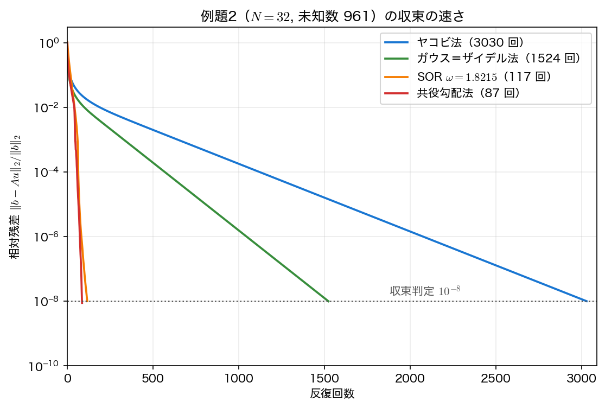
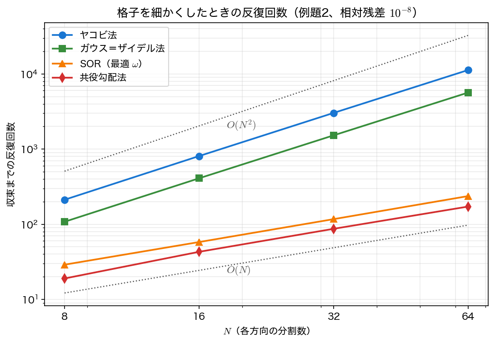

収束の理論と共役勾配法
前ページでは3手法の反復回数を実測しただけだった。\(3817\) 回・\(1910\) 回・\(120\) 回という数字がどこから来るのか、そして格子を細かくしたときにどう増えるのか——これらは紙の上で予測できる。本ページでは離散ラプラシアンの固有値からスペクトル半径を求め、最適緩和係数 \(\omega^*=2/(1+\sin\pi h)\) を導く。さらに第3回の共役勾配法を行列を作らずに実装し、4手法の計算量を総括する。
反復行列とスペクトル半径
第3回で見たとおり、定常反復法は
の形をしている。真の解 \(u^*\) は \(u^*=Mu^*+c\) を満たすので、誤差 \(e^{(k)}=u^{(k)}-u^*\) は
と、反復行列 \(M\) を \(k\) 回かけたものになる。したがって収束するかどうか、そしてどれくらい速いかは、\(M\) のスペクトル半径（spectral radius） \(\rho(M)=\max_i\lvert\mu_i\rvert\) だけで決まる。
相対残差を \(\varepsilon\) まで落とすのに必要な反復回数は、\(\rho^k=\varepsilon\) を解いて
である。\(\rho\) が \(1\) に近いほど分母が小さくなり、\(k\) は爆発的に増える。
離散ラプラシアンの固有値
5点差分行列 \(A\) の固有ベクトルは、第7回の1次元の場合と同じ形をしている。\(k,l=1,\dots,N-1\) について
を5点ステンシルに代入すると、和の公式から
が得られる。\(x\) 方向と \(y\) 方向の1次元の固有値がそのまま足し合わされる形である。すべて正なので \(A\) は正定値であり、共役勾配法の適用条件を満たす。
両端の値を見ておく。
したがって条件数は
格子を細かくするほど悪条件になる。これが、あらゆる反復法が \(N\) とともに苦しくなる根本原因である。
ヤコビ法のスペクトル半径
ヤコビ法の反復行列は \(M_J=D^{-1}(L+U)=I-\dfrac{h^2}{4}A\) なので、固有値は
最大絶対値は \(k=l=1\)（および \(k=l=N-1\)、符号が逆）で達成され、
\(h\) が小さいとき \(\cos\pi h\approx1-\pi^2h^2/2\) なので \(-\ln\rho_J\approx\pi^2h^2/2\)、したがって
格子を2倍細かくすると反復回数は4倍になる。
収束を止めるのは「最も滑らかなモード」——ただし素のヤコビ法は高周波も落とせない
\(\rho_J\) を与えるのは \(k=l=1\) のモード、つまり領域全体に広がる最も滑らかな成分である。1回の反復で情報は隣の格子点までしか伝わらず、端から端まで届くのに \(N\) 回かかるので、長い波長の誤差はなかなか動かない。
ただし「高周波なら速く消える」と早合点してはいけない。\(k=l=N-1\) とすると \(\cos(N-1)\pi h=\cos(\pi-\pi h)=-\cos\pi h\) なので
となり、最も激しく振動する市松模様の成分は、最も滑らかな成分とまったく同じ速さでしか減らない（毎回符号が入れ替わるだけである）。上で「最大絶対値は \(k=l=1\) と \(k=l=N-1\) の両方で達成される」と書いたのはこのことである。素のヤコビ法が素早く消せるのは \(\mu\approx0\) となる中間の波数（\(k\) か \(l\) が \(N/2\) 付近）だけで、両端は落ちない。
高周波を確実にならすには、更新量に \(0<\omega<1\) を掛ける緩和つきヤコビ法（damped Jacobi）を使う。反復行列は \(M_\omega=(1-\omega)I+\omega M_J\)、固有値は \(1-\omega(1-\mu)\) となり、高周波側（\(k\) または \(l\) が \(N/2\) 以上）での最大絶対値は \(\omega=4/5\) のとき \(3/5\) で最小になる（1次元なら \(\omega=2/3\) で \(1/3\)）。ガウス＝ザイデル法は緩和なしでも高周波側の減衰率が \(1/2\) 程度あり、そのままで高周波をならす働きをもつ。
「高周波は数回でならせるが、滑らかな成分は残る」という状況を作れれば、残った滑らかな誤差は粗い格子（そこでは相対的に高周波に見える）で処理できる。この考えを再帰的に適用したのがマルチグリッド法（multigrid method）である。本講義では扱わないが、ポアソン方程式を \(O(n)\) で解く最適な手法として知られている。マルチグリッドの平滑化に素のヤコビ法ではなく緩和つきヤコビ法や GS を使うのは、まさに上で見た理由による。
ガウス＝ザイデル法と SOR
\(A\) のように性質 A（property A）をもつ行列——赤黒の市松模様に2色塗り分けできる行列——については、ヤング（Young）の理論により次が成り立つ。
\(\ln\rho_{\text{GS}}=2\ln\rho_J\) なので、必要な反復回数はちょうど半分になる。前ページの \(3817\) 回と \(1910\) 回、その比 \(2.00\) の正体がこれである。
同じ理論から、SOR の最適緩和係数とそのスペクトル半径も決まる。
（\(\rho_J=\cos\pi h\) なので \(\sqrt{1-\rho_J^2}=\sin\pi h\) となる。）ここが決定的である。\(h\) が小さいとき
\(\rho\) の \(1\) からのずれが \(O(h^2)\) から \(O(h)\) に変わる。この1桁の違いが、反復回数を \(O(N^2)\) から \(O(N)\) へ落とす。\(\omega\) という1つのパラメータを正しく選ぶだけで、計算量のオーダーそのものが改善されるのである。
理論値と実測値を並べる（相対残差 \(<10^{-8}\)、例題1）。実測の \(\rho\) は、収束直前の残差比 \(\lVert r^{(k)}\rVert/\lVert r^{(k-1)}\rVert\) を取ったものである。
| \(N\) | \(\rho_J\) 理論 | \(\rho_J\) 実測 | \(\rho_{\text{GS}}\) 理論 | \(\rho_{\text{GS}}\) 実測 | \(\omega^*\) |
|---|---|---|---|---|---|
| 8 | 0.923880 | 0.923880 | 0.853553 | 0.853553 | 1.446463 |
| 16 | 0.980785 | 0.980785 | 0.961940 | 0.961940 | 1.673514 |
| 32 | 0.995185 | 0.995185 | 0.990393 | 0.990393 | 1.821465 |
| 64 | 0.998795 | 0.998795 | 0.997592 | 0.997592 | 1.906455 |
6桁すべて一致している。理論はここまで正確に当たる。反復回数の予測 \(k\approx\ln\varepsilon/\ln\rho\) も確かめておこう。
| \(N\) | ヤコビ 予測 | ヤコビ 実測 | GS 予測 | GS 実測 | SOR 予測 | SOR 実測 |
|---|---|---|---|---|---|---|
| 8 | 233 | 233 | 116 | 118 | 23 | 29 |
| 16 | 949 | 950 | 475 | 476 | 47 | 60 |
| 32 | 3816 | 3817 | 1908 | 1910 | 94 | 120 |
| 64 | 15283 | 15284 | 7642 | 7643 | 188 | 241 |
ヤコビ法とガウス＝ザイデル法はほぼ完璧に当たる。SOR だけは実測が予測の約 \(1.3\) 倍になっているが、これは理論が間違っているのではない。\(\omega=\omega^*\) のとき SOR の反復行列は対角化できない（固有値が重なり、ジョルダン標準形になる）ため、誤差は \(\rho^k\) ではなく \(k\rho^k\) のように減る。漸近的な傾きは正しく、初期の立ち上がりのぶんだけ余計にかかるのである。\(O(N)\) というオーダーの予測は、実測が \(29\to60\to120\to241\) とほぼ倍々になることで裏づけられている。
共役勾配法——行列を作らずに
\(A\) は対称正定値なので、第3回の共役勾配法（CG）がそのまま使える。CG が必要とするのは行列そのものではなく行列ベクトル積 \(Ap\) だけであり、5点差分ならこれは1行で書ける。
このように行列を保持しない実装を matrix-free と呼ぶ。必要な作業配列は \(u,\ r,\ p,\ Ap\) の4本だけ、メモリは \(O(n)\) で済む。
CG の反復回数は第3回で述べたとおり条件数の平方根で決まる。
SOR と同じ \(O(N)\) である。しかも CG には決定的な利点がある。
- 調整すべきパラメータがない。SOR は \(\omega^*\) を知っていなければ性能が出ないが、CG は何も指定しなくてよい。
- 領域や境界条件を選ばない。\(\omega^*=2/(1+\sin\pi h)\) は単位正方形の一様格子でしか使えないが、CG は \(A\) が対称正定値でありさえすればよい。
- 前処理（preconditioning）で更に速くできる。不完全コレスキー分解などを組み合わせた PCG が実用の標準である。

例題1 では CG が1反復で収束してしまう
例題1 の右辺 \(2\pi^2\sin\pi x\sin\pi y\) は、離散ラプラシアン \(A\) の固有ベクトル \(v^{(1,1)}\) そのものである。初期値 \(u^{(0)}=0\) から始めると初期誤差も固有ベクトル1本しか含まないので、CG は1回の探索方向で厳密解に到達する（実行結果の表で CG の列がすべて \(1\) になっているのがそれである）。
これは CG が速いことの証明ではなく、例題1が特殊すぎることの表れである。反復法の実力を測るときは、例題2 のように多くのモードを含む問題を使わなければならない。手法を比較するときは「問題が手法に都合よくできていないか」を疑う習慣をつけてほしい。
例題2 での反復回数は次のようになる。
| \(N\) | 未知数 \(n\) | ヤコビ | GS | SOR（最適） | CG |
|---|---|---|---|---|---|
| 8 | 49 | 212 | 108 | 29 | 19 |
| 16 | 225 | 808 | 409 | 58 | 43 |
| 32 | 961 | 3030 | 1524 | 117 | 87 |
| 64 | 3969 | 11264 | 5649 | 237 | 172 |
\(N\) を倍にしたときの増え方が、ヤコビ・GS は約4倍、SOR・CG は約2倍。理論どおり \(O(N^2)\) と \(O(N)\) に分かれている。

計算量の総括
1回の反復の演算量はどの反復法も \(O(n)=O(N^2)\)（各格子点で数回の加減乗除）である。したがって総演算量は「反復回数 \(\times\,n\)」になる。
| 手法 | 反復回数 | 総演算量 | メモリ | パラメータ |
|---|---|---|---|---|
| 直接法（密） | — | \(O(n^3)=O(N^6)\) | \(O(n^2)=O(N^4)\) | — |
| 直接法（帯） | — | \(O(nm^2)=O(N^4)\) | \(O(nm)=O(N^3)\) | — |
| ヤコビ法 | \(O(N^2)\) | \(O(N^4)=O(n^2)\) | \(O(n)\) | なし |
| ガウス＝ザイデル法 | \(O(N^2)\) | \(O(N^4)=O(n^2)\) | \(O(n)\) | なし |
| SOR（最適 \(\omega\)） | \(O(N)\) | \(O(N^3)=O(n^{1.5})\) | \(O(n)\) | \(\omega^*\) が必要 |
| 共役勾配法 | \(O(N)\) | \(O(N^3)=O(n^{1.5})\) | \(O(n)\) | なし |
| （参考）マルチグリッド | \(O(1)\) | \(O(N^2)=O(n)\) | \(O(n)\) | 設定は複雑 |
メモリの列に注目してほしい。反復法はすべて \(O(n)\) であり、直接法の \(O(n^2)\) とは決定的に違う。\(N=1000\)（未知数 \(10^6\)）を扱えるかどうかは、まずここで決まる。
サンプルコード
収束係数の理論値と実測値の比較、2つの例題での4手法の反復回数、そして matrix-free な共役勾配法の実装をまとめる。
#include <stdio.h>
#include <math.h>
/* 第10回 ポアソン方程式: 収束率の理論と実測、共役勾配法（第3回）との比較
理論値（単位正方形・5点差分・h = 1/N）:
ヤコビ法 rho_J = cos(pi h)
ガウス＝ザイデル法 rho_GS = cos^2(pi h) = rho_J^2
最適 SOR omega* = 2/(1 + sin(pi h)), rho_SOR = omega* - 1
例題1: -Delta u = 2 pi^2 sin(pi x) sin(pi y), u|_boundary = 0
例題2: Delta u = 0, 上辺 u = 1、他の3辺 u = 0（ラプラス方程式） */
static const double PI = 3.14159265358979323846;
/* 右辺ベクトル b を作る（境界値の寄与は右辺へ移項しておく）。
* 以後どの手法でも配列の境界成分は 0 のまま使う。 */
static void set_rhs(int N, int ex, double b[N+1][N+1])
{
double h = 1.0/N, h2 = h*h;
for (int j = 0; j <= N; j++)
for (int i = 0; i <= N; i++) b[j][i] = 0.0;
for (int j = 1; j < N; j++)
for (int i = 1; i < N; i++) {
if (ex == 1) b[j][i] = 2.0*PI*PI*sin(PI*i*h)*sin(PI*j*h);
else if (j == N-1) b[j][i] = 1.0/h2; /* 上辺 u=1 の寄与 */
}
}
static double res_norm(int N, double h2, double u[N+1][N+1], double b[N+1][N+1])
{
double s = 0.0;
for (int j = 1; j < N; j++)
for (int i = 1; i < N; i++) {
double au = (4.0*u[j][i] - u[j][i-1] - u[j][i+1] - u[j-1][i] - u[j+1][i]) / h2;
double r = b[j][i] - au;
s += r*r;
}
return sqrt(s);
}
/* method: 0 = ヤコビ, 1 = GS, 2 = SOR。最後の残差比を rho に返す。
fp != NULL なら (手法番号, 反復回数, 相対残差) を作図用に書き出す */
static int stationary(int N, int ex, int method, double omega,
double tol, int maxit, double *rho, FILE *fp)
{
double h = 1.0/N, h2 = h*h;
double u[N+1][N+1], un[N+1][N+1], b[N+1][N+1];
set_rhs(N, ex, b);
for (int j = 0; j <= N; j++)
for (int i = 0; i <= N; i++) u[j][i] = un[j][i] = 0.0;
double r0 = res_norm(N, h2, u, b), prev = r0;
*rho = 0.0;
if (fp) fprintf(fp, "%d %d %.10e\n", method, 0, 1.0);
int it = 0;
while (it < maxit) {
if (method == 0) {
for (int j = 1; j < N; j++)
for (int i = 1; i < N; i++)
un[j][i] = 0.25*(u[j][i-1] + u[j][i+1] + u[j-1][i] + u[j+1][i] + h2*b[j][i]);
for (int j = 1; j < N; j++)
for (int i = 1; i < N; i++) u[j][i] = un[j][i];
} else {
double w = (method == 1) ? 1.0 : omega;
for (int j = 1; j < N; j++)
for (int i = 1; i < N; i++) {
double gs = 0.25*(u[j][i-1] + u[j][i+1] + u[j-1][i] + u[j+1][i] + h2*b[j][i]);
u[j][i] = (1.0 - w)*u[j][i] + w*gs;
}
}
it++;
double r = res_norm(N, h2, u, b);
if (fp) fprintf(fp, "%d %d %.10e\n", method, it, r / r0);
if (it > 1) *rho = r / prev; /* 直近の残差比 = 漸近収束係数 */
prev = r;
if (r / r0 < tol) break;
}
return it;
}
/* 行列を作らない共役勾配法（第3回）。A v は5点差分の作用そのもの */
static int cg(int N, int ex, double tol, int maxit, FILE *fp)
{
double h = 1.0/N, h2 = h*h;
double u[N+1][N+1], r[N+1][N+1], p[N+1][N+1], Ap[N+1][N+1], b[N+1][N+1];
set_rhs(N, ex, b);
for (int j = 0; j <= N; j++)
for (int i = 0; i <= N; i++) u[j][i] = r[j][i] = p[j][i] = Ap[j][i] = 0.0;
double rr = 0.0;
for (int j = 1; j < N; j++)
for (int i = 1; i < N; i++) {
r[j][i] = b[j][i]; /* u = 0 なので r = b */
p[j][i] = r[j][i];
rr += r[j][i]*r[j][i];
}
double r0 = sqrt(rr);
if (fp) fprintf(fp, "%d %d %.10e\n", 3, 0, 1.0);
for (int it = 1; it <= maxit; it++) {
double pAp = 0.0;
for (int j = 1; j < N; j++)
for (int i = 1; i < N; i++) {
Ap[j][i] = (4.0*p[j][i] - p[j][i-1] - p[j][i+1] - p[j-1][i] - p[j+1][i]) / h2;
pAp += p[j][i]*Ap[j][i];
}
double alpha = rr / pAp, rr_new = 0.0;
for (int j = 1; j < N; j++)
for (int i = 1; i < N; i++) {
u[j][i] += alpha*p[j][i];
r[j][i] -= alpha*Ap[j][i];
rr_new += r[j][i]*r[j][i];
}
if (fp) fprintf(fp, "%d %d %.10e\n", 3, it, sqrt(rr_new)/r0);
if (sqrt(rr_new)/r0 < tol) return it;
double beta = rr_new / rr;
for (int j = 1; j < N; j++)
for (int i = 1; i < N; i++) p[j][i] = r[j][i] + beta*p[j][i];
rr = rr_new;
}
return maxit;
}
int main(void)
{
double tol = 1e-8;
printf("=== 収束係数: 理論と実測（例題1, 相対残差 < %.0e）===\n", tol);
printf(" N h rho_J(理論) rho_J(実測) rho_GS(理論) rho_GS(実測) omega*\n");
printf("-------------------------------------------------------------------------------\n");
for (int N = 8; N <= 64; N *= 2) {
double h = 1.0/N, rj, rg;
stationary(N, 1, 0, 0.0, tol, 200000, &rj, NULL);
stationary(N, 1, 1, 0.0, tol, 200000, &rg, NULL);
printf("%5d %8.5f %12.6f %12.6f %12.6f %12.6f %10.6f\n",
N, h, cos(PI*h), rj, cos(PI*h)*cos(PI*h), rg, 2.0/(1.0+sin(PI*h)));
}
printf("\n=== 反復回数（例題1: 右辺が離散固有ベクトルそのもの）===\n");
printf(" N 未知数 n ヤコビ GS SOR(最適) CG\n");
printf("------------------------------------------------------\n");
for (int N = 8; N <= 64; N *= 2) {
double h = 1.0/N, w = 2.0/(1.0 + sin(PI*h)), rho;
int nj = stationary(N, 1, 0, 0.0, tol, 200000, &rho, NULL);
int ng = stationary(N, 1, 1, 0.0, tol, 200000, &rho, NULL);
int ns = stationary(N, 1, 2, w, tol, 200000, &rho, NULL);
int nc = cg(N, 1, tol, 200000, NULL);
printf("%5d %9d %9d %7d %10d %6d\n", N, (N-1)*(N-1), nj, ng, ns, nc);
}
printf(" CG が 1 反復なのは、この右辺が5点差分の固有ベクトル sin(pi x)sin(pi y)\n");
printf(" そのもので、誤差が1つの固有ベクトルしか含まないためである（特殊な例）。\n");
printf("\n=== 反復回数（例題2: ラプラス方程式・上辺のみ加熱）===\n");
printf(" N 未知数 n ヤコビ GS SOR(最適) CG\n");
printf("------------------------------------------------------\n");
FILE *fh = fopen("iterative_convergence.dat", "w"); /* 作図用: N=32 の残差履歴 */
FILE *fs = fopen("poisson_scaling.dat", "w"); /* 作図用: 反復回数の格子依存性 */
if (fh == NULL || fs == NULL) { perror("*.dat"); return 1; }
fprintf(fh, "# method(0=Jacobi 1=GS 2=SOR 3=CG) iteration relative_residual\n");
fprintf(fs, "# N n jacobi gs sor cg\n");
for (int N = 8; N <= 64; N *= 2) {
double h = 1.0/N, w = 2.0/(1.0 + sin(PI*h)), rho;
FILE *fp = (N == 32) ? fh : NULL; /* 履歴は N=32 のぶんだけ残す */
int nj = stationary(N, 2, 0, 0.0, tol, 200000, &rho, fp);
int ng = stationary(N, 2, 1, 0.0, tol, 200000, &rho, fp);
int ns = stationary(N, 2, 2, w, tol, 200000, &rho, fp);
int nc = cg(N, 2, tol, 200000, fp);
printf("%5d %9d %9d %7d %10d %6d\n", N, (N-1)*(N-1), nj, ng, ns, nc);
fprintf(fs, "%d %d %d %d %d %d\n", N, (N-1)*(N-1), nj, ng, ns, nc);
}
fclose(fh); fclose(fs);
printf("\n=== 格子を倍にしたときの反復回数の増え方 ===\n");
printf(" ヤコビ・GS は約 4 倍（O(N^2)）、SOR と CG は約 2 倍（O(N)）である。\n");
printf(" 1回の反復の計算量は n = (N-1)^2 に比例するので、総計算量は\n");
printf(" ヤコビ・GS が O(N^4) = O(n^2)、SOR と CG が O(N^3) = O(n^1.5) になる。\n");
return 0;
}
コンパイル・実行:
実行結果
=== 収束係数: 理論と実測（例題1, 相対残差 < 1e-08）===
N h rho_J(理論) rho_J(実測) rho_GS(理論) rho_GS(実測) omega*
-------------------------------------------------------------------------------
8 0.12500 0.923880 0.923880 0.853553 0.853553 1.446463
16 0.06250 0.980785 0.980785 0.961940 0.961940 1.673514
32 0.03125 0.995185 0.995185 0.990393 0.990393 1.821465
64 0.01562 0.998795 0.998795 0.997592 0.997592 1.906455
=== 反復回数（例題1: 右辺が離散固有ベクトルそのもの）===
N 未知数 n ヤコビ GS SOR(最適) CG
------------------------------------------------------
8 49 233 118 29 1
16 225 950 476 60 1
32 961 3817 1910 120 1
64 3969 15284 7643 241 1
CG が 1 反復なのは、この右辺が5点差分の固有ベクトル sin(pi x)sin(pi y)
そのもので、誤差が1つの固有ベクトルしか含まないためである（特殊な例）。
=== 反復回数（例題2: ラプラス方程式・上辺のみ加熱）===
N 未知数 n ヤコビ GS SOR(最適) CG
------------------------------------------------------
8 49 212 108 29 19
16 225 808 409 58 43
32 961 3030 1524 117 87
64 3969 11264 5649 237 172
=== 格子を倍にしたときの反復回数の増え方 ===
ヤコビ・GS は約 4 倍（O(N^2)）、SOR と CG は約 2 倍（O(N)）である。
1回の反復の計算量は n = (N-1)^2 に比例するので、総計算量は
ヤコビ・GS が O(N^4) = O(n^2)、SOR と CG が O(N^3) = O(n^1.5) になる。
可視化
poisson_conv.c は2つのファイルを書き出す。iterative_convergence.dat は例題2・\(N=32\) の残差履歴（1列目 手法番号 0=ヤコビ, 1=GS, 2=SOR, 3=CG、2列目 反復回数、3列目 相対残差）、poisson_scaling.dat は例題2 の反復回数の格子依存性（1列目 \(N\)、2列目 未知数 \(n\)、以下 4手法の反復回数）である。
import numpy as np
import matplotlib.pyplot as plt
hist = np.loadtxt("iterative_convergence.dat") # 列: method, iteration, rel. residual
scal = np.loadtxt("poisson_scaling.dat") # 列: N, n, jacobi, gs, sor, cg
names = ["Jacobi", "Gauss-Seidel", "SOR (optimal $\\omega$)", "CG"]
fig, (ax1, ax2) = plt.subplots(1, 2, figsize=(11.5, 4.6))
for m, name in enumerate(names):
s = hist[hist[:, 0] == m]
ax1.semilogy(s[:, 1], s[:, 2], lw=1.6, label=f"{name} ({int(s[-1, 1])})")
ax1.axhline(1e-8, color="gray", ls=":", lw=1.2)
ax1.set_ylim(1e-10, 3.0)
ax1.set_xlabel("iteration")
ax1.set_ylabel("relative residual")
ax1.set_title("example 2, $N = 32$")
ax1.grid(alpha=0.3, which="both")
ax1.legend(fontsize=9)
N = scal[:, 0]
for col, name, mk in zip(range(2, 6), names, "os^d"):
ax2.loglog(N, scal[:, col], mk + "-", ms=5, label=name)
ax2.loglog(N, 3.0 * N**2, "k:", lw=1.2, label="$O(N^2)$")
ax2.loglog(N, 4.0 * N, "k--", lw=1.2, label="$O(N)$")
ax2.set_xlabel("$N$")
ax2.set_ylabel("iterations to reach $10^{-8}$")
ax2.set_title("how the cost grows with the grid")
ax2.grid(alpha=0.3, which="both")
ax2.legend(fontsize=9)
fig.tight_layout()
fig.savefig("iterative_convergence.png", dpi=150)
plt.show()
実行:
左では、縦軸が対数なのでヤコビ法とガウス＝ザイデル法が直線になり、その傾きがちょうど2倍の関係にある（\(\rho_{\text{GS}}=\rho_J^2\)）。CG だけが直線でないのは、固定した反復行列を持たず毎回方向を選び直すためである。右では、ヤコビ・GS が \(O(N^2)\) の点線に、SOR・CG が \(O(N)\) の破線に平行に並ぶ。傾きが違う——これが定数倍の改善との決定的な差である。
まとめ
- 定常反復法の速さは反復行列のスペクトル半径 \(\rho\) だけで決まり、必要反復回数は \(k\approx\ln\varepsilon/\ln\rho\)。
- 5点差分行列の固有値は \(\lambda_{k,l}=\dfrac{4}{h^2}\left(\sin^2\dfrac{k\pi h}{2}+\sin^2\dfrac{l\pi h}{2}\right)\)、条件数は \(\kappa\approx4/(\pi^2h^2)=O(N^2)\)。
- \(\rho_J=\cos\pi h\)、\(\rho_{\text{GS}}=\rho_J^2\)、\(\omega^*=2/(1+\sin\pi h)\)、\(\rho_{\text{SOR}}=\omega^*-1\)。理論値と実測値は6桁一致する。
- 収束を律速するのは最も滑らかなモード（\(k=l=1\)）。高周波の凹凸は数回でならされる。
- \(\rho\) の \(1\) からのずれは、ヤコビ・GS が \(O(h^2)\)、SOR が \(O(h)\)。これが反復回数 \(O(N^2)\) と \(O(N)\) の違いを生む。
- 共役勾配法は行列ベクトル積だけで実装でき（matrix-free）、\(O(\sqrt{\kappa})=O(N)\) 回で収束する。パラメータ調整が不要で領域を選ばない点で SOR より実用的である。
- 例題1 で CG が1反復に見えるのは問題が特殊なだけである。手法の比較には偏りのない試験問題を使うこと。
- 総計算量は直接法 \(O(N^6)\)、ヤコビ・GS \(O(N^4)\)、SOR・CG \(O(N^3)\)。メモリは反復法がすべて \(O(n)\) で、これが大規模問題を扱えるかどうかの分かれ目になる。